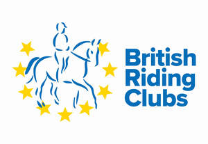
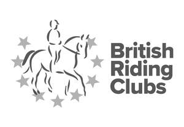

Trade Mark Journal No.2025/026 27 June 2025
UK00004216630 10 June 2025 (6,9,14,16,18,21,24,25,28,35,36,41,42)
Mark 1

Mark 2

- Class 6
- Badges for vehicles all of the aforesaid goods relating to promoting the interest, welfare and safety of horses, ponies and riders, promoting the breeding of horses and ponies, encouraging the use and protection of horses and ponies, promoting and facilitating the acquisition and distribution of knowledge of the various arts and sciences connected with horses and ponies and the use and management thereof (including regulation and management of qualifications schemes and exhibitions/competitions) and promoting and facilitating the improvement of access and rights of way; parts and fittings of the aforesaid.
- Class 9
- Video tapes, recording disks, DVD disks, data carriers, computer programs relating to animals; safety clothing; arm bands, tabards and belts, all being safety clothing; time keeping and time recording apparatus and instruments; all of the aforesaid goods relating to promoting the interest, welfare and safety of horses, ponies and riders, promoting the breeding of horses and ponies, encouraging the use and protection of horses and ponies, promoting and facilitating the acquisition and distribution of knowledge of the various arts and sciences connected with horses and ponies and the use and management thereof (including regulation and management of qualifications schemes and exhibitions/competitions) and promoting and facilitating the improvement of access and rights of way; parts and fittings of the aforesaid.
- Class 14
- Horological and chronometric instruments; key rings; cufflinks, stickpins, tie pins, brooches; jewellery; cups, trophies; badges for wear made of precious metal; all of the aforesaid goods relating to promoting the interest, welfare and safety of horses, ponies and riders, promoting the breeding of horses and ponies, encouraging the use and protection of horses and ponies, promoting and facilitating the acquisition and distribution of knowledge of the various arts and sciences connected with horses and ponies and the use and management thereof (including regulation and management of qualifications schemes and exhibitions/competitions) and promoting and facilitating the improvement of access and rights of way; parts and fittings of the aforesaid.
- Class 16
- Printed matter; magazines; photographs; books, booklets; programmes, schedules timetables; invitation cards; stationery; writing paper and envelopes; instructional and teaching material; greeting cards; diaries, calendars; writing implements; bookmarks; pictures, stickers, gift tokens, car tax disc holders; clipboard holders; brochures, publications, reading cards, postcards; badges of paper; all of the aforesaid goods relating to promoting the interest, welfare and safety of horses, ponies and riders, promoting the breeding of horses and ponies, encouraging the use and protection of horses and ponies, promoting and facilitating the acquisition and distribution of knowledge of the various arts and sciences connected with horses and ponies and the use and management thereof (including regulation and management of qualifications schemes and exhibitions/competitions) and promoting and facilitating the improvement of access and rights of way.
- Class 18
- Leather and imitations of leather; animal skins, hides; trunks and travelling bags; handbags, rucksacks, purses; umbrellas, parasols and walking sticks; whips, harness and saddlery; clothing for animals.
- Class 21
- Mugs, household or kitchen utensils and containers; flasks; combs and sponges; brushes; brush-making materials; articles for cleaning purposes; steel wool; articles made of ceramics, glass, porcelain or earthenware which are not included in other classes; electric and non-electric toothbrushes; money boxes; flasks.
- Class 24
- Textiles and textile goods; bed and table covers; travellers' rugs, textiles for making articles of clothing; duvets; covers for pillows, cushions or duvets; badges of fabric.
- Class 25
- Clothing, footwear, headgear.
- Class 28
- Games and playthings; jigsaws, plush toys; playing cards; gymnastic and sporting articles; decorations for Christmas trees; children's toy bicycles; parts and fittings of the aforesaid.
- Class 35
- Advertising and promotional services; compilation and provision of commercial information; administration services; all the aforesaid services relating to promoting the interest, welfare and safety of horses, ponies and riders, promoting the breeding of horses and ponies, encouraging the use and protection of horses and ponies, promoting and facilitating the acquisition and distribution of knowledge of the various arts and sciences connected with horses and ponies and the use and management thereof (including regulation and management of qualifications schemes and exhibitions/competitions) and promoting and facilitating the improvement of access and rights of way; information, advisory and consultancy services relating to the aforesaid.
- Class 36
- Insurance; financial services; information, advisory and consultancy services relating to the aforesaid.
- Class 41
- Producing, organising and staging competitions and entertainment all relating to animals; organising sports competitions; education, instruction and training all relating to horses, horse riding, the welfare and care of horses and regarding teaching about the same; monitoring, supervision and advisory services, all relating to horse riding safety standards; consultancy services relating to horses and horse riding; training of horses; provision of club recreation facilities and sporting facilities; publication of printed matter; provision of information relating to horses, horse riding, safety, rights of way for horses and access to off-road riding; rental of horse riding facilities; organising animal shows; rental of sports equipment; training of officials; production of newsletters and magazines, club services; recreational services; physical education; sporting services; electronic publication; information services relating to the aforesaid; all of the aforesaid services relating to promoting the interest, welfare and safety of horses, ponies and riders, promoting the breeding of horses and ponies, encouraging the use and protection of horses and ponies, promoting and facilitating the acquisition and distribution of knowledge of the various arts and sciences connected with horses and ponies and the use and management thereof (including regulation and management of qualifications schemes and exhibitions/competitions) and promoting and facilitating the improvement of access and rights of way; information, advisory and consultancy services relating to the aforesaid.
- Class 42
- Certification services; all of the aforesaid services relating to promoting the interest, welfare and safety of horses, ponies and riders, promoting the breeding of horses and ponies, encouraging the use and protection of horses and ponies, promoting and facilitating the acquisition and distribution of knowledge of the various arts and sciences connected with horses and ponies and the use and management thereof (including regulation and management of qualifications schemes and exhibitions/competitions) and promoting and facilitating the improvement of access and rights of way; information, advisory and consultancy services relating to the aforesaid.
The British Horse Society
Representative: Withers & Rogers LLP